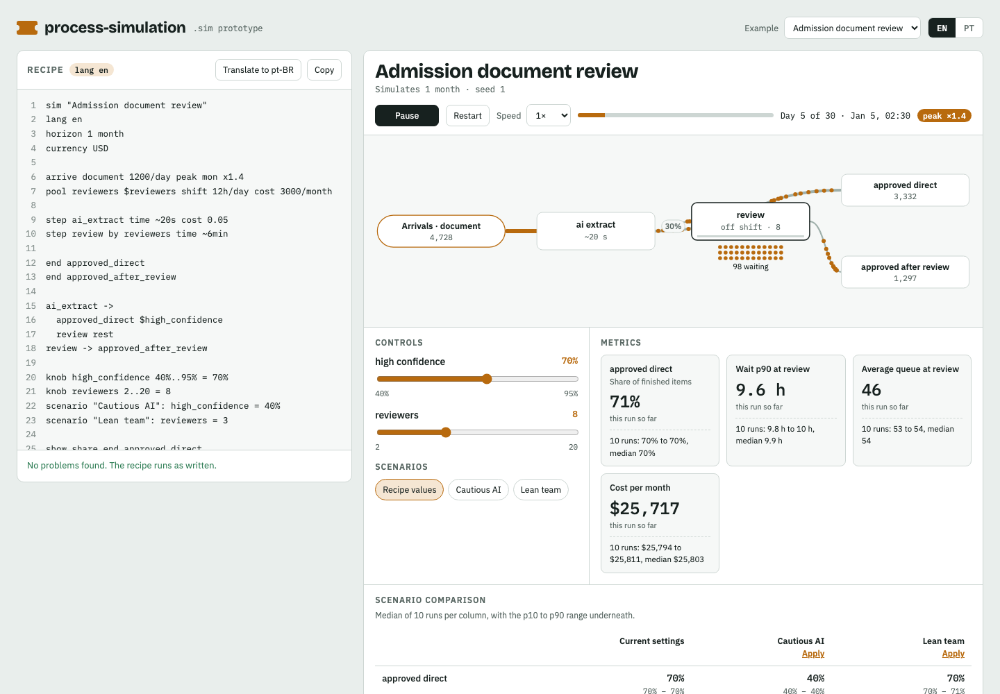
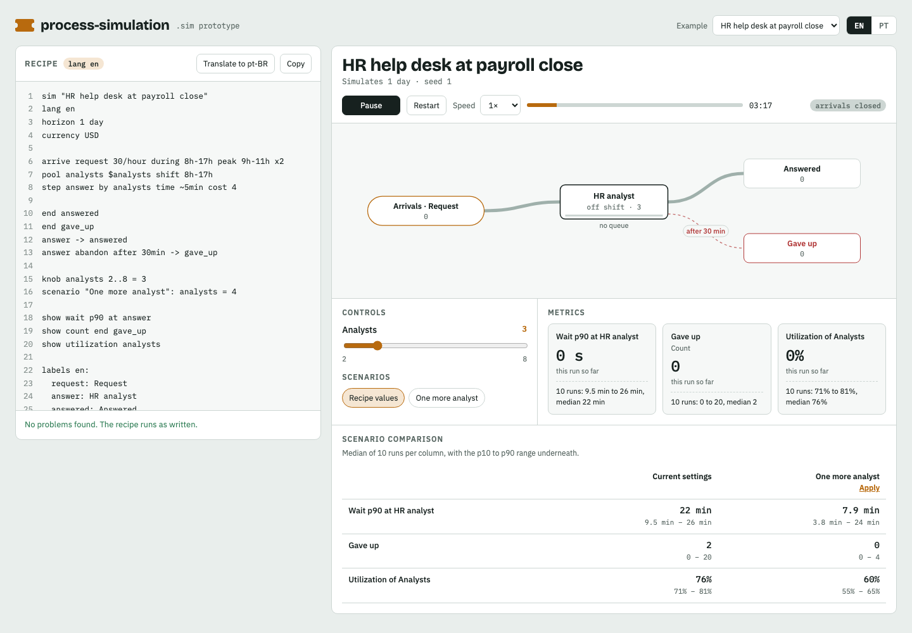
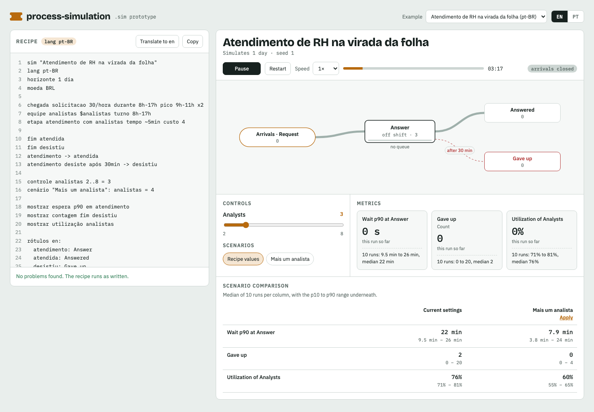

Employee Self-Service with WorkdayEmployee Self-Service with Workday, after the scenarios of Microsoft’s public sample: vacation balance and profile read from Workday, time off approved by the manager, policy questions answered or sent to an HR partner. Move «Policy questions answered» and watch the HR queue. The numbers are made up.
SimulationRecipe (.sim)
Employee Self-Service with WorkdayEmployee Self-Service with Workday, after the scenarios of Microsoft’s public sample: vacation balance and profile read from Workday, time off approved by the manager, policy questions answered or sent to an HR partner. Move «Policy questions answered» and watch the HR queue. The numbers are made up.
SimulationRecipe (.sim)
process-simulation
Describe a process to Claude — what arrives, who handles it, what it costs. Get a simulation you can watch: the items arriving, the queues forming, a slider for every «what if», the ranges of many seeded runs and the scenarios side by side. One HTML file that opens offline.
Examples — open one and move the sliders
Employee Self-Service with WorkdayEmployee Self-Service with Workday, after the scenarios of Microsoft’s public sample: vacation balance and profile read from Workday, time off approved by the manager, policy questions answered or sent to an HR partner. Move «Policy questions answered» and watch the HR queue. The numbers are made up.
SimulationRecipe (.sim)

Admission document reviewAdmission documents read by an extraction step and reviewed by people when its confidence is low: how many reviewers the confidence asks for. SimulationRecipe (.sim)
HR help desk at payroll closeAn HR help desk on payroll close, 8 to 17, three analysts, a morning peak, people who give up after 30 minutes: what one more analyst buys. SimulationRecipe (.sim)
Atendimento de RH na virada da folhaO mesmo atendimento, com a receita em português: a tela também troca para PT. SimulationRecipe (.sim)In Claude Code, the recipe is checked as it is written
The dna plugin carries a mod: a .sim with errors is refused with the validator's messages, so Claude fixes it; /simulate runs it and prints each metric's median and range; /simulation-preview opens a pane with the flow.